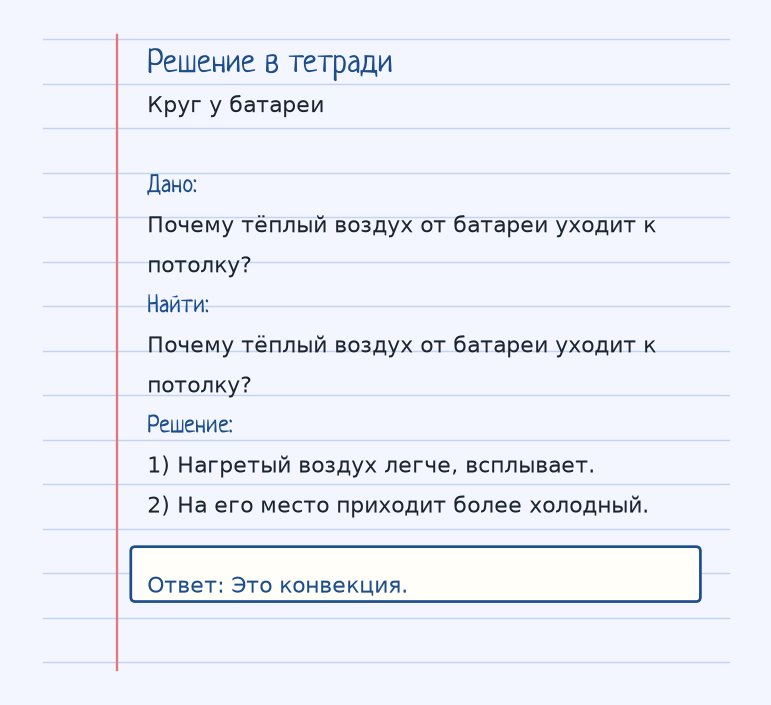
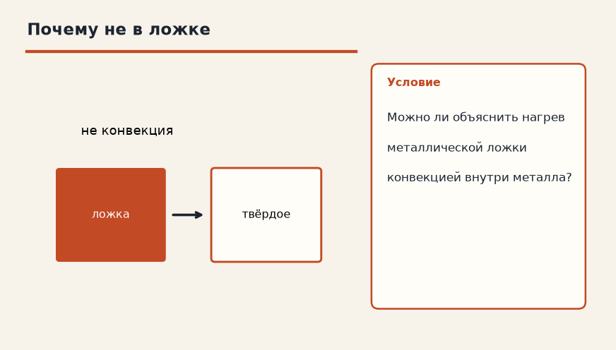
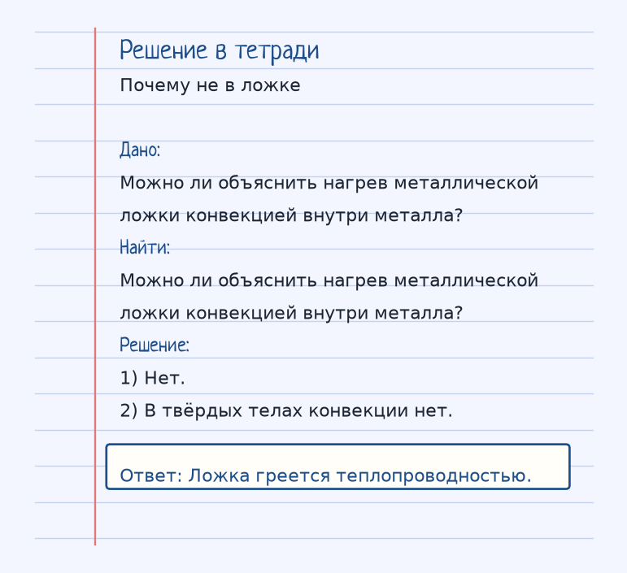

Тема «Конвекция»: физический смысл, единицы величин, типичные ошибки и два разобранных примера.
Физический смысл
Передача тепла потоками жидкости или газа. Нагретые слои поднимаются вверх, холодные — опускаются вниз.
Конвекция переносит тепло вместе с веществом. Нагретая жидкость или газ легче соседних слоёв, всплывает, а холодный слой опускается на его место. Получается круговорот.
Батарея под окном как раз запускает такой круг: воздух у рёбер теплеет, ползёт вверх по комнате, у окна и у пола остывает и возвращается вниз. Поэтому батарею и ставят низко, а не под потолком.
В твёрдом теле слои не могут всплыть. Конвекции там нет. Ложка греется проводимостью, а не тем, что кусочки металла плавают внутри неё.
Разобранные примеры. Решение каждого открывается отдельно.
Разбор 1
Круг у батареи
Почему тёплый воздух от батареи уходит к потолку?
На схеме только условие. Открыть решение
Порядок записи: данные, единицы СИ, искомая величина, ход решения, ответ.
Дано. Почему тёплый воздух от батареи уходит к потолку?
В СИ.
Найти. Почему тёплый воздух от батареи уходит к потолку?
Решение.
Нагретый воздух легче, всплывает. На его место приходит более холодный. Это конвекция.

Разбор 2
Почему не в ложке
Можно ли объяснить нагрев металлической ложки конвекцией внутри металла?

На схеме только условие. Открыть решение
Порядок записи: данные, единицы СИ, искомая величина, ход решения, ответ.
Дано. Можно ли объяснить нагрев металлической ложки конвекцией внутри металла?
В СИ.
Найти. Можно ли объяснить нагрев металлической ложки конвекцией внутри металла?
Решение.
Нет. В твёрдых телах конвекции нет. Ложка греется теплопроводностью.

Разбор 3
Батарея
Почему тёплый воздух от батареи поднимается?
На схеме только условие. Открыть решение
Порядок записи: данные, единицы СИ, искомая величина, ход решения, ответ.
Дано. Воздух у батареи нагрет
В СИ.
Найти. Причина
Решение.
Нагретый воздух менее плотный и всплывает. Из-за уменьшения плотности.
Разбор 4
Где бывает
В каких средах возможна конвекция?
На схеме только условие. Открыть решение
Порядок записи: данные, единицы СИ, искомая величина, ход решения, ответ.
Дано. Школьное деление способов
В СИ.
Найти. Среды
Решение.
В жидкостях и газах, где вещество может течь. В жидкостях и газах.
Разбор 5
Холодный слой
Куда смещается остывший воздух в комнате?
На схеме только условие. Открыть решение
Порядок записи: данные, единицы СИ, искомая величина, ход решения, ответ.
Дано. Воздух у потолка остывает
В СИ.
Найти. Направление
Решение.
Остывший воздух плотнее и опускается. Вниз.
Разбор 6
Стержень
Можно ли объяснить нагрев железного стержня конвекцией внутри металла?
На схеме только условие. Открыть решение
Порядок записи: данные, единицы СИ, искомая величина, ход решения, ответ.
Дано. Стержень твёрдый
В СИ.
Найти. Ответ
Решение.
В твёрдом металле конвекции нет. Нет.
Разбор 7
Размещение
Почему отопительную батарею ставят у пола?
На схеме только условие. Открыть решение
Порядок записи: данные, единицы СИ, искомая величина, ход решения, ответ.
Дано. Нужен круговорот воздуха
В СИ.
Найти. Причина
Решение.
Тёплый поток тогда проходит через комнату снизу вверх. Чтобы тёплый воздух поднимался от пола.